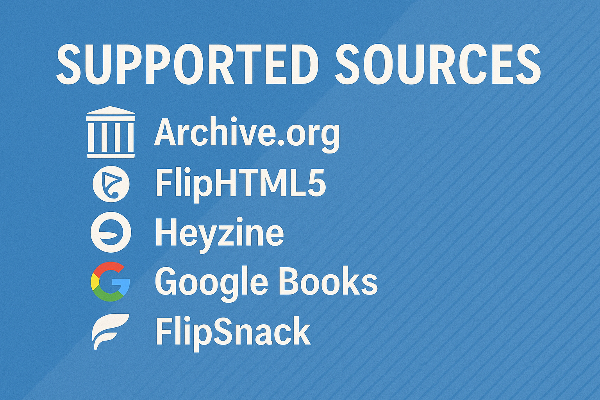
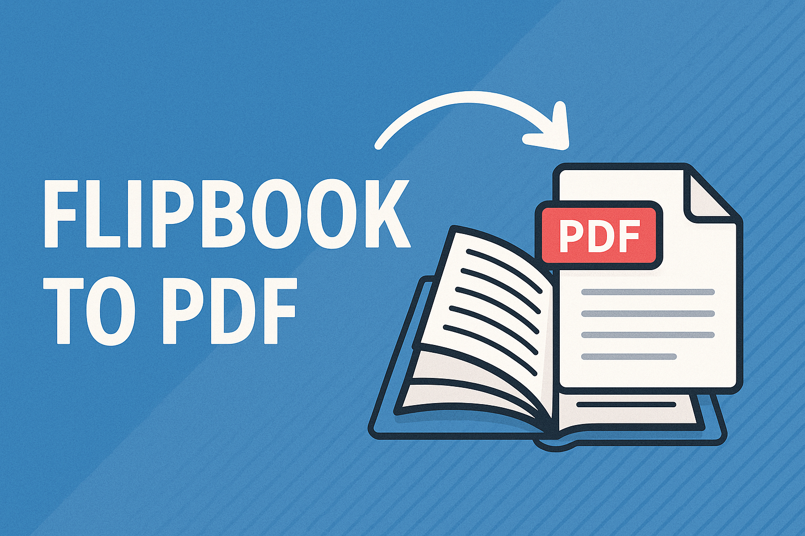
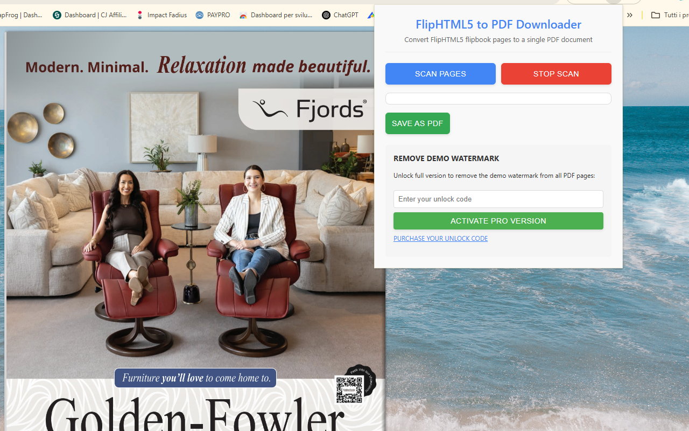

Flipbook to PDF Downloader
Convert online flipbooks into downloadable PDF files for offline reading, archiving, study, and personal reference. Fast, simple, and designed for popular digital flipbook platforms.
No more manual screenshots, missing pages, or low-quality captures. This tool helps you scan flipbook pages automatically, preview the result, and generate a clean PDF in just a few steps.

Fast conversion
Automatically scan pages and export them into a single PDF without tedious manual work.
Page preview
Review captured pages before download and check that everything was scanned correctly.
Local processing
PDF generation happens inside your browser, helping keep your data private and secure.
Flipbook to PDF Downloader
A practical solution for saving supported online flipbooks as PDF files
📚 Tired of not being able to save digital flipbooks for offline reading? Meet Flipbook to PDF Downloader, a convenient solution for converting online flipbooks from multiple platforms into downloadable PDF files.
This Chrome extension is designed for readers, students, researchers, teachers, librarians, and professionals who often work with online publications presented in a flipbook format. Instead of losing access when you go offline or having to revisit the same website repeatedly, you can preserve the content in a more practical PDF format for later use.
It works with major flipbook platforms including Archive.org, FlipSnack.com, FlipHTML5.com, Heyzine.com, AnyFlip, and Google Books. Whether you're researching, studying, or simply reading digital magazines, catalogs, manuals, or brochures, this tool helps turn supported web-based flipbooks into PDF documents you can keep for reference.
🚀 The extension automatically scans pages, extracts the displayed content, helps reduce duplicate captures, and compiles everything into a polished PDF. This avoids the slow and frustrating process of taking manual screenshots one page at a time.
What is a flipbook?
A flipbook is a digital publication that simulates the experience of turning the pages of a real book or magazine. It is commonly used for online catalogs, magazines, brochures, product presentations, reports, portfolios, and preview books.
Unlike a normal PDF viewer, a flipbook usually presents pages with animations, page-turn effects, zoom controls, and fullscreen reading options. While flipbooks look attractive and interactive online, they are not always easy to save for offline access. That is why converting them to PDF can be much more practical in many everyday situations.
Many websites use flipbook technology to display content in a more engaging way, but users often prefer PDF when they need portability, printing, annotation, archiving, or long-term access.
Why convert a flipbook to PDF?
Offline reading
Read your saved documents anytime, even without an internet connection.
Easier archiving
Keep a local copy for future consultation, study, or documentation purposes.
Printing support
PDF files are much easier to print than interactive online viewers.
Reference and study
Ideal for research, assignments, lesson preparation, and personal study collections.
✨ How It Works
- Install the extension:
- Open any supported flipbook on platforms like Archive.org, FlipSnack, Google Books, FlipHTML5, AnyFlip, or similar websites.
- Click the extension icon to activate the scanning panel.
- Start the automatic scanning process. The extension pages through the publication and captures the content automatically.
- Preview the captured pages and verify the output.
- Click Download PDF to save your flipbook as a PDF document.
✅ Supported Platforms
- Archive.org digital books and publications
- FlipSnack.com flipbooks
- FlipHTML5.com publications
- Heyzine.com flipbooks
- AnyFlip digital magazines
- Google Books previews
- And many other flipbook platforms

🔥 Key Features
Who is this tool useful for?
Flipbook to PDF Downloader is useful in many real-world situations. Students may want to keep a local copy of educational material, researchers may need access to preview documents for citation or comparison, and professionals may wish to archive digital catalogs, brochures, manuals, or presentations for internal reference.
It can also be helpful for librarians, educators, designers, and general readers who prefer the convenience of a PDF over a browser-based viewer when reading long documents.
📷 Screenshots


🎥 Video Tutorial
Respect for privacy
🛡️ Your privacy matters. The extension processes the content locally in your browser, which helps avoid unnecessary transfers to external servers. This makes the workflow faster and gives users more control over their data.
Intended use
💡 This type of tool is intended for working with content you are allowed to view and save for personal, educational, archival, or reference purposes. Users should always respect copyright, licensing terms, and the policies of the websites they access.
Why users like it
🌟 Many users appreciate having a simpler way to keep important digital publications accessible. Instead of depending entirely on an online viewer, they can preserve documents in a widely supported PDF format that is easier to store, print, and consult later.
❓ Frequently Asked Questions
Does it work on every flipbook website?
It is designed for several popular flipbook platforms and similar viewers. Compatibility may vary depending on how each website loads or protects its content.
Why convert to PDF instead of reading online?
PDF files are easier to archive, print, organize, and read offline. Many users prefer PDF for long-term access and research workflows.
Can I preview the pages before downloading?
Yes, the extension provides a preview workflow so you can review the captured pages before creating the final PDF.
Is the extension difficult to use?
No. The interface is designed to be simple and straightforward, even for users who are not experienced with browser extensions.